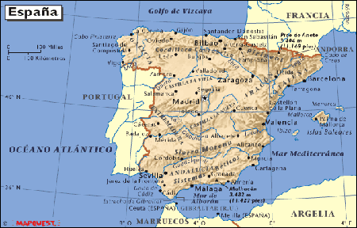
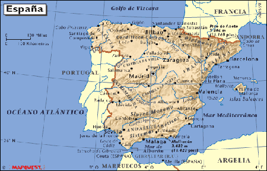
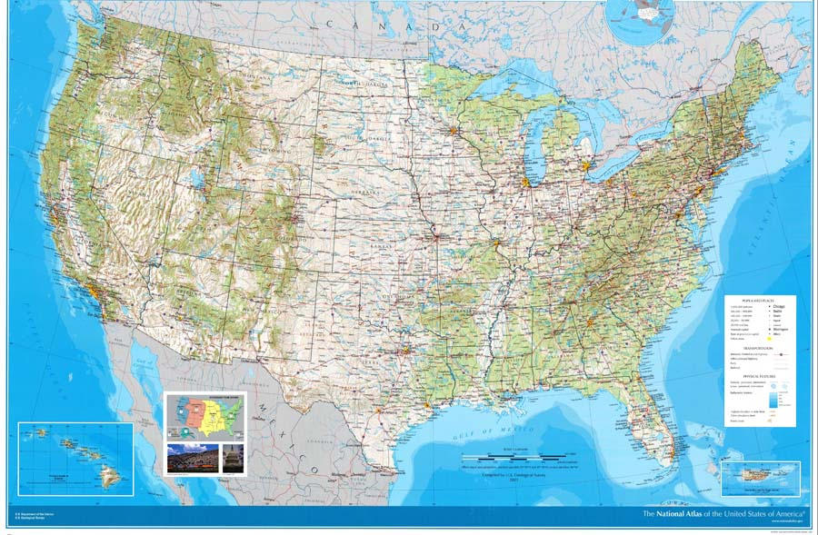
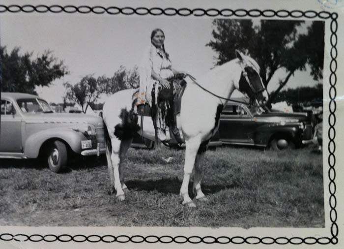
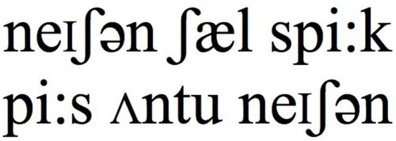
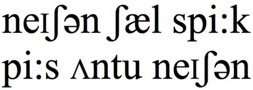
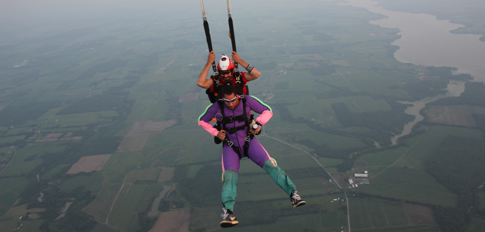
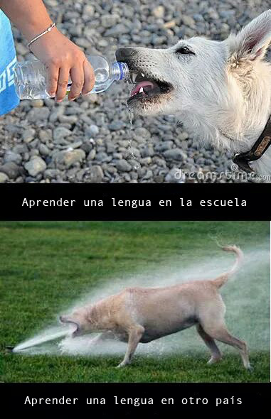

Fonética y español oral
Intro
Joseph V. Casillas
Instituto Franklin: otoño 2015
Acerca del profe
Mi nombre es Joseph Casillas.

Soy de Arizona.

Tengo una perra.

Mi Padre.

 

Mi madre.



Soy lingüista.

 

Estudio el bilingüismo y la adquisición de segundas lenguas.

También enseño en Middlebury College.

Me gusta el fútbol.

Con un compañero...
- Contesta las siguientes preguntas
- ¿De dónde eres?
- ¿Qué estudias?
- ¿Dónde estudias?
- ¿Tienes alguna mascota?
- ¿Alguna pregunta para mí?
Con un compañero nuevo...

- Pregúntale tres cosas nuevas y cuéntanoslas
Introducción al curso
El plan

¿Qué vais a aprender?
¿Cómo lo vamos a hacer? El programa.
Sugerencias para tener éxito.
Objetivos


Desarrollar y controlar las estructuras básicas de gramática
Ampliar el vocabuario
Consolidar la habilidad de negociar situaciones básicas en español dentro de un contexto cultural
Preparación para estudiar la lengua independientemente
Objetivos

- describir experiencias de la vida diaria (rutinas, actividades, etc.)
- describir personas (familia, amigos, etc.) y lugares
- narrar eventos en los tiempos del presente y del futuro
- describir y reflexionar sobre los contrastes culturales
- hacer preguntas para solicitar información
- presentar a la clase temas investigados y contestar preguntas
- dar instrucciones y direcciones

Algunas sugerencias
- Habla siempre español
- Haz muchas preguntas.
- No tengas miedo de hacer errores; lo que importa es la comunicación.
- Pide ayuda cuando estés confundido/a.
- Ven a clase con la tarea preparada.
- No asumas nada, pídele al profesor que confirme las expectativas.
- Participa activamente en clase; procura hablar por lo menos 10 minutos en cada clase.
Más sugerencias
- Lee mucho en español. La lectura es muy buena para desarrollar la producción oral.
- Escucha la radio en español.
- Escucha música en español.
- Ve a todas las películas de la escuela española.
- Participa en muchas actividades co-curriculares.
- Habla con otros profesores y con estudiantes de todos los niveles.
- Estudiar (pero ¡no demasiado!)
- ¡Diviértete!